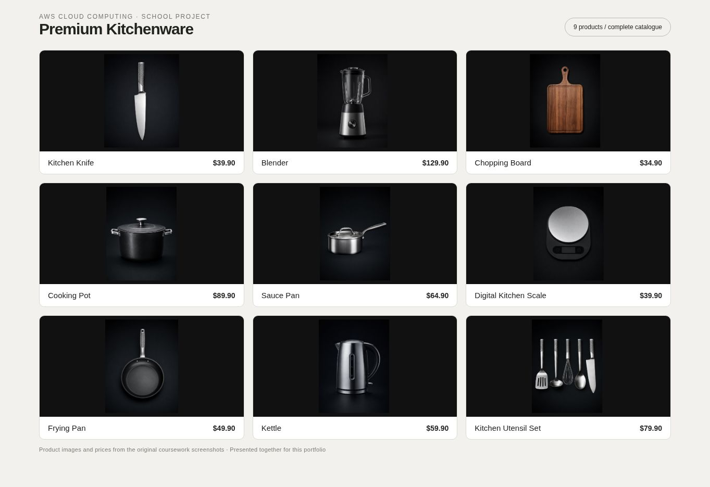

Amazon EC2
Used a cloud server to serve the e-commerce catalogue website and configured security-group rules for the lab environment.
AWS Kitchenware Marketplace
I built a kitchenware catalogue website for a cloud computing assignment, using an EC2 web server and product images stored in Amazon S3. Each product card displays an image, name, price and description.

The catalogue covered nine kitchenware products, including a knife, blender, chopping board, cooking pot, saucepan, digital scale, frying pan, kettle and utensil set. The project demonstrates a cloud-hosted catalogue; checkout and payment processing are outside this showcase.
Used a cloud server to serve the e-commerce catalogue website and configured security-group rules for the lab environment.
Uploaded nine product images to an S3 bucket and used them in the website. Enabled bucket versioning and inspected object versions.
Created a high-CPU alarm with an 80% threshold over a five-minute period. A later screenshot showed the alarm in the OK state.
Configured an idle-instance alarm with a ≤1 threshold across six datapoints over 30 minutes. The captured state was insufficient data; measured savings were not established.
This case study documents the school deployment shown in the supplied August 2026 screenshots. The original lab endpoint is not presented as a currently available service. Account and infrastructure identifiers are omitted.
The assignment connected web development with practical cloud setup: serving a website, managing image objects and versions, configuring network access and checking server metrics. A future iteration would add HTTPS, tighten administrative access and expand monitoring validation.
Supplementary private-S3 CloudFormation practice ↗The linked template is a separate portfolio practice resource, not the source of the original coursework deployment.